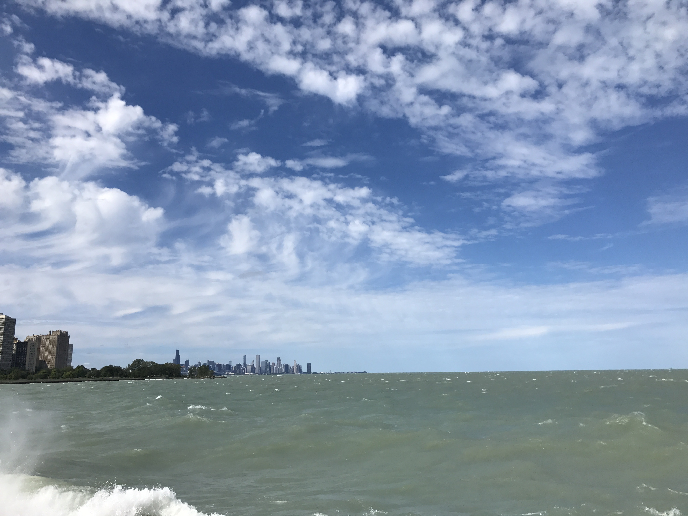

Wenjie Han
Publications
Mentors & Collaborators
Pictures
Travel
I am a keen traveller and have been to a lot places in the world. Check the map below and see if you have also been to one of these cities.
